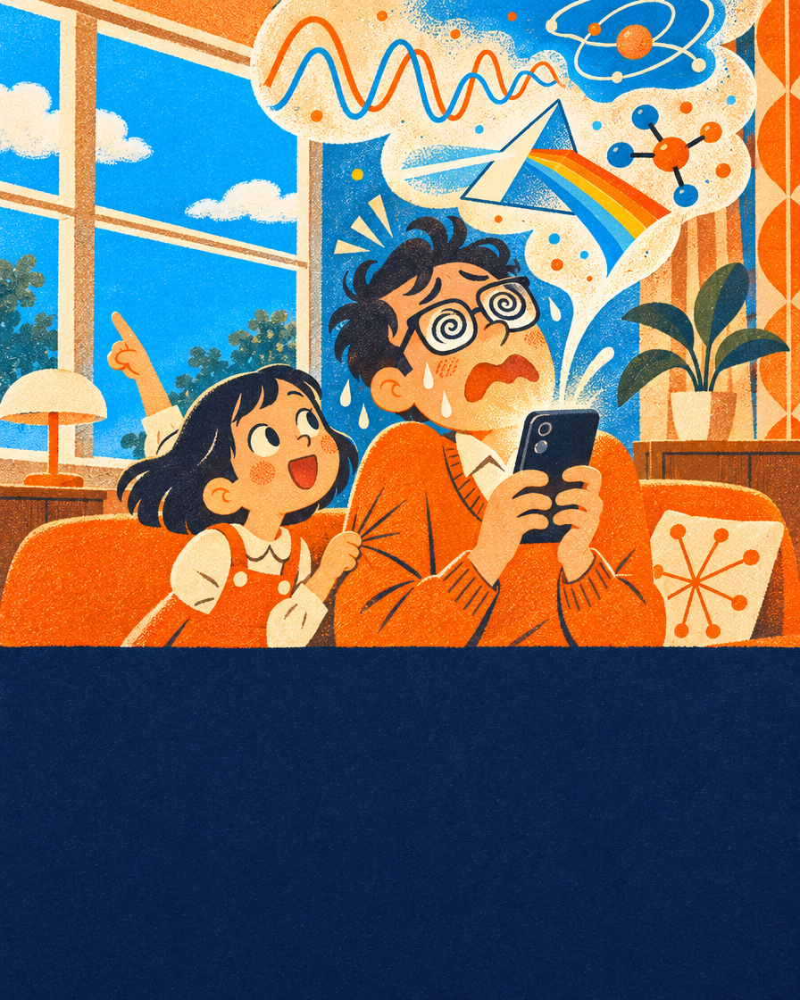

NEXUS TEST · 아이의 "왜?"
NEXUS TEST · 아이의 "왜?"FILE 02/09
QUESTION 01 · JUST ASK
그냥 물었더니
클로드 · 실제 답(새 대화)
왜 하늘은 파래?
레일리 산란 때문이에요.
산란 세기는 파장의 4제곱에
반비례해요…
산란 세기는 파장의 4제곱에
반비례해요…
답에 나온 말 👇
레일리 산란파장4제곱공기 분자

NEXUS TEST · 아이의 "왜?"NEXUS TEST · 아이의 "왜?" NEXUS TEST · 아이의 "왜?"NEXUS TEST · 아이의 "왜?"NEXUS TEST · 아이의 "왜?"
NEXUS TEST · 아이의 "왜?"NEXUS TEST · 아이의 "왜?"NEXUS TEST · 아이의 "왜?" NEXUS TEST · 아이의 "왜?"NEXUS TEST · 아이의 "왜?"NEXUS TEST · 아이의 "왜?"
NEXUS TEST · 아이의 "왜?"NEXUS TEST · 아이의 "왜?"NEXUS TEST · 아이의 "왜?"